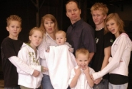
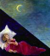

Lofty Lanyons
In an effort to turn their small Kentish home into a more spacious abode, the Lanyons had their loft converted into another bedroom and a small office. The work only took three weeks but that was about all that Daisha could handle. "I had to make about 50 cups of tea a day for all the workers," she sighs wearily. "I always thought tea a little-old-lady's sort of thing but all these big, burly construction guys seemed to want a cup every hour or two! I never even knew how to make a proper cup of tea until our loft was converted - now I'm an expert."
Skinny Twinnies
The Cluff twins had never been anywhere near Smallville and were well on their way to the Land of the Portly when suddenly they flipped a U-y and took the exit at Svelte Street. "When the boys were only 13 years old" begins Diana, "Dallas was a pant size 40 and Weston was a 38. Now Dallas is a 34 and Weston's a 30. It took them a year and a half following the South Beach Diet and not having any seconds, but now they look great!"
Nial's A1-derkid
Nial recently shelved a top drawer opportunity to work at Sony in San Diego with Steve, turning it down to stay in the cabinet business in Coquille instead. Having chewed it over for a while, Nial decided he wooden go because he'd pine after his family: "he likes his work with Dane and Hyrum," reports Dennis. Nial commented, "who would want to take on a high paid job with great prospects at a multinational corporation? especially if you have to, like, play video games all day. errr, hang on a second..."
'Mon the Baptist
"Ammon had a great experience this year," says Karen," because he found out how important it is to be a good example to your friends. His best friend Nick was baptized after investigating the church for a few months. He began going to seminary in his junior year with Ammon and Kaylynn so he could get a ride to school. But after months of going to church with us on Sundays and seminary he was baptized early in the school year. He moved to Myrtle Point where he could not be with Ammon as much and has fallen away from the church. Ammon is very sad about it. It was a great experience for Ammon to be able to use his priesthood and baptize his friend. It has also been a good experience for him to see how his example was super important to how instrumental he was to his friend. Unfortunately, Nick moved away before he had a strong enough testimony to sustain himself through moving away."
At Your Service
Dallas and Weston have been run off their feet serving their community in a wide range of charitable projects including decorating for the Halloween carnival, moving cabinets, squirrel baiting, planting trees, sculpting butter badgers (for the elderly) and building a vicious gazebo.
Soren's Sore Arm
While playing backyard football with new neighbors Jonathan and Daniel, Soren broke his arm making a tackle. �We had just told the boys to be careful,� laments the friend�s mom. �This is our first day in the neighborhood and we didn�t want to get acquainted through a broken arm!� Soren�s mom was sympathetically heard to remark, �At least it�s your left arm so you can still do your school work.� Soren was not impressed. The silver lining is that football has become a new passion for Soren.
Out to Get Them
Mom and the boys had three near misses as they drove on the deadly Coquille road this Fall. "It was like everyone was out to get us," complains Diana. "Good thing we always say our prayers!"
 Got a problem or a question? The Cluff Family Times' lifestyle guru can solve all of your personal, romantic, financial, spiritual, decorating and fashion dilemmas. The answers are only a click away. Do you have a question for our agony aunt? Send it to: info@tuffcluff.com Got a problem or a question? The Cluff Family Times' lifestyle guru can solve all of your personal, romantic, financial, spiritual, decorating and fashion dilemmas. The answers are only a click away. Do you have a question for our agony aunt? Send it to: info@tuffcluff.com
WIN WIN WIN!
 Don't forget to enter our prize giveaway contest this month (last time Dallas won 'The Incredibles' on DVD - mainly because he was the only one to enter the contest!). We really want your help in making the website a cooler place so PLEASE enter the competition (or at the very least force your kids to do it as a homework exercise in writing). We're looking for your worst traveling disaster stories for an upcoming feature article in the travel section. Send your horror stories to us here at Tuffcluff and the best/worst one will win the DVD of their choice!
Don't forget to enter our prize giveaway contest this month (last time Dallas won 'The Incredibles' on DVD - mainly because he was the only one to enter the contest!). We really want your help in making the website a cooler place so PLEASE enter the competition (or at the very least force your kids to do it as a homework exercise in writing). We're looking for your worst traveling disaster stories for an upcoming feature article in the travel section. Send your horror stories to us here at Tuffcluff and the best/worst one will win the DVD of their choice!
Get-Togethers
Just in case you are unaware, family reunions for the Dennis and Diana Cluff family take place each year in Ashland on and around the Fourth of July. So make a permanent mental note then get yourself to The Homestead for the party! Also, in 2006 we will be gathering for a big Christmas reunion, so don't forget to put that in your calendar!
Have Your Say
Don't agree with something we've said? Want to write an editorial? Have something to report? Want to see your article in print? It's easy! Just send your submissions and pictures via email to: info@tuffcluff.com
Next Issue
The Winter 2006/07 edition of The Cluff Family Times is stuffed full of goodies like: Vomfest 2006 (A Cluff Family Christmas Story), how Weston was neglected for 15 years, the wild snowstorm, chicken cannibalism, more bedwetting, twins behind the wheel and even a story about a rabid dog! It's all there next quarter. Don't miss it!
What gets wetter and wetter the more it dries?
A towel!
I am weightless, but you can see me. Put me in a bucket, and I'll make it lighter. What am I?
A hole!
|
|
Global Halloween Report
This year Halloween was celebrated by Cluffs the world over. In Ashland Shira went downtown for the festivities in a glamorous costume and was snapped by a photographer for the local newspaper (see picture). In Coquille the Cluffs and Johnsons admit to having a "lame" Halloween with the only real activity being the kids trick-or-treating their neighborhoods. In San Diego the Cluffs went trick-or-treating too. "Eucalyptus trees look really spooky at night," says Tasha. "Dru was pretty spooked by parents wearing masks at the door even though she's hopelessly drawn by the candy. It was not worth getting that close to a 'wolf-man'." In Georgia the Beals had an epicurean�s Halloween complete with home-grown 'heritage pumpkins' and an array of gourmet treats. In Britain, where Halloween was invented but is only recently gaining in popularity, the Lanyons had fun decorating the scaffolding in front of their house for their loft conversion to make a spook alley for the few kids that actually dared to trick-or-treat. Tabitha confused locals by dressing up as a bee Tabbee video (Halloween is a gruesome and scary event in England - no kid ever dresses up in something cute, sweet or nice).
Burn the Guy!
Guy Fawkes was a Roman Catholic who hated the Protestant King James I and planned to assassinate him by blowing up Parliament in the "Gunpowder Plot" on November 5th, 1605. He was found out, caught, tortured then hung, drawn and quartered for treason. Now each 5th of November the British commemorate his death with "Guy Fawkes Night" or "Bonfire Night". It's the closest thing they've got to the 4th of July and they celebrate with parades, food, bonfires, fireworks, parties etc... Each year the Lanyons head down to the high street of their village for the festivities. "Once it's dark," begins Daisha, "it all kicks off with a parade where an actor playing Guy Fawkes is carted down the street in a cage. He pleads for his life but the villagers, who are walking along behind him with burning torches, refuse. He tries to appeal to us as Christians, but he just gets heckled. We wind up at our local farmer's field for a massive bonfire which is topped off by an effigy of Guy Fawkes (made by the primary school children). We eat sausage dogs and chat to our neighbors and then there is a fantastic fireworks display from the castle. You'd think they'd be careful about shooting off fireworks in the 1,000 year old castle, but no. It's a great time for the whole family so if you're ever in Britain at the beginning of November, drop in and help us burn the Guy."
Kira: School Contest Winner!  As a third grader at Double Churches Elementary, Kira entered the schools 2006-07 Reflections contest �My Favorite Place� and won. A 20x30 collage of the English countryside won first place in the visual arts category. On the back of her entry she wrote, �My Aunt lives in England and took us for a walk up the hill behind her house. I ran up ahead and twirling around told my Aunt to remind me to live here when I grow up. This painting reminds me of my favorite place.� She also submitted three photographs winning the top three places in the photography category. Third place is a close up of a bright orange flower with a green bug in the center �Wouldn�t your favorite place be a colorful, sweet smelling, comfy home too?� Kira asks. Second place is a close up of a lime green caterpillar on a stalk of parsley, �After eating and eating, a stalk of refreshing parsley is the caterpillar�s favorite place,� wrote Kira. First place is a tight shot of her mom tickling a laughing Joseph. Kira wrote, �Everyday Joseph comes up to us and says, �Tickle time!� Being in mom�s arms getting tickled is his favorite place.� Her acoustic poem entitled England didn�t place in the Literature category. Oh well, like Grandma always says, �Win some, lose some.�
As a third grader at Double Churches Elementary, Kira entered the schools 2006-07 Reflections contest �My Favorite Place� and won. A 20x30 collage of the English countryside won first place in the visual arts category. On the back of her entry she wrote, �My Aunt lives in England and took us for a walk up the hill behind her house. I ran up ahead and twirling around told my Aunt to remind me to live here when I grow up. This painting reminds me of my favorite place.� She also submitted three photographs winning the top three places in the photography category. Third place is a close up of a bright orange flower with a green bug in the center �Wouldn�t your favorite place be a colorful, sweet smelling, comfy home too?� Kira asks. Second place is a close up of a lime green caterpillar on a stalk of parsley, �After eating and eating, a stalk of refreshing parsley is the caterpillar�s favorite place,� wrote Kira. First place is a tight shot of her mom tickling a laughing Joseph. Kira wrote, �Everyday Joseph comes up to us and says, �Tickle time!� Being in mom�s arms getting tickled is his favorite place.� Her acoustic poem entitled England didn�t place in the Literature category. Oh well, like Grandma always says, �Win some, lose some.�
Surprise Call
"Last Saturday we got a call from the stake executive secretary," reveals Karen, "that said that the stake president wanted to meet with Dane and I on Sunday. Of course we were all speculating what it could be about. I thought it was going to be something for Dane, but wasn't sure what it was. When we went in on Sunday we found out that our bishopric was being reorganized and the new bishop of our ward wanted Dane for the 2nd counselor. I was elated the calling was not for me, but it will take a lot of patience for me because Sunday was a day I knew I could count on us being together. Now it will be quite different. But we both know this is where he is supposed to be and feel very blessed."
|
SEASONAL CLUFF TRADITIONS
|
Halloween
The Bellview Halloween carnival, with its fantastic spook alley, was an annual imperative. A spooky Halloween-themed dinner including things like bloody (tomato) soup, spidery rolls and smoking homemade rootbeer or hot apple cider and caramel apples usually followed. But the highlight of the night was always trick-or-treating. Dad would drive us around target rich environments (Oak Knoll & Quiet Village) and we'd rake in enough candy (pillowcases full, in some instances) to last us for months. Our favorite Halloween movies are 'Arsenic and Old Lace', 'Meet Me in St. Louis', 'Wait Until Dark', and 'Psycho'.
Thanksgiving
Thanksgiving is a wonderful time of year when the family comes together around the table to reminisce, laugh and be subjected to the most vile European movie ever produced (and that's saying a lot). Mom forces us watch The Emigrant Saga to make us feel thankful for what our ancestors went through--but it really only makes us nauseous. If you haven't seen the film; a child's stomach explodes after eating yeast, a cat fight breaks out on a vomit-infested ship (because a prostitute is spreading lice) and a heavily pregnant mother gets hacked to pieces by a hungry Indian. Appetizing! Aside from that, Thanksgiving is great. The morning is either spent preparing food in the kitchen (Mom and Mel) or playing mud football at the park (the rest of us). At noon(ish) we sit down to eat. The table is decked with mom's vast Pilgrim paraphernalia centerpiece, we have great conversation, we consume vast amounts of food and then (drugged by the tryptophan in the turkey) all settle down for a post-feast nap. The nap generally only lasts 7 minutes (since there are 90 antsy grandchildren tearing through the house) so the festivities get back on track quickly with pioneer stories, wild family limbo contests, wrestling matches, dancing and board games (with Mom's answers to every question always involving a bungee jumper, somehow). We also watch 'It's a Mad, Mad, Mad, Mad World', but, because it's three hours long, the men generally wander off before the end to watch football in the other room.
Chicken Report
After a vicious, cannibalistic attack in the coop last quarter things seem to have settled down a bit and there have been no more reports of "fowl" play in the coop for the last three months. Things are either looking up or this is just the quiet before the storm. Only time will tell!
Dad's September Garden Update
"It rained for the first time since summer today," reports farmer Dennis. "It has been in the 90's everyday and now it will be in the 60's, upper 40's at night. The corn is all gone now. We have our winter garden in and next comes the apple and grape harvest and juice canning. Walnuts are breaking limbs off the trees and hazelnuts are falling now too. Dang pecan trees are lame, and need some encouragement to start producing (we did get some small pecans last year though)."
The Legend of the Randy Rooster For years now, every time someone at the Cluff house wanted to open an egg they'd have to hold their breath and pray for mercy. Most of the time things turned out okay but every once in a while a ticking time bomb would go off and a half-formed chick would drop out into their cake mix or frying pan - sending the traumatized egg-cracker running for the hills. This gruesome but regular occurrence could easily have been avoided by one simple thing: not having a rooster - yet he remained. But his incessant crowing and randy behavior with the hens began to grate. His fertilizing days were numbered. One morning, after another time bomb hit the pan, the Cluffs decided to take drastic action. They caught the rooster with a fishing net and took him for a scenic drive up the Dead Indian into the mountains - and he never returned. We'll probably never know what happened to him. Maybe he is slowly making his way back home, maybe a coyote got him or maybe he's made a happy life for himself with a harem of quail and a clutch of fully hatched offspring.
For years now, every time someone at the Cluff house wanted to open an egg they'd have to hold their breath and pray for mercy. Most of the time things turned out okay but every once in a while a ticking time bomb would go off and a half-formed chick would drop out into their cake mix or frying pan - sending the traumatized egg-cracker running for the hills. This gruesome but regular occurrence could easily have been avoided by one simple thing: not having a rooster - yet he remained. But his incessant crowing and randy behavior with the hens began to grate. His fertilizing days were numbered. One morning, after another time bomb hit the pan, the Cluffs decided to take drastic action. They caught the rooster with a fishing net and took him for a scenic drive up the Dead Indian into the mountains - and he never returned. We'll probably never know what happened to him. Maybe he is slowly making his way back home, maybe a coyote got him or maybe he's made a happy life for himself with a harem of quail and a clutch of fully hatched offspring.
Tuffcluff© cares. We do! We want to bring sunshine and happiness into your dreary little lives, and to prove it we've devised a Cluff-friendly entertainment guide to keep TuffCluffs the world over happy and content.
Cool Websites For... Movie Lovers
Nitpickers is a fun site that reveals the continuity mistakes in movies and TV. You can register your own nitpicks or check out the mistakes others have caught in your favorite films. (They still haven't discovered the bird smacking into the background during the song 'Wonderful, Wonderful Day' in Seven Brides!). If you like to look at reviews before you watch a movie, Rotten Tomatoes is the site for you. You'll find the opinions of over 100 critics to help you sort the fresh from the rotten tomatoes. And last, but not least, our favorite comprehensive movie website ever is IMDB. We've mentioned it before but feel it's good enough to recommend twice.
Tuffcluff Film Club Summer's gone. The fun is over. No vacations for a whole year! But don't be gloomy - you may be stuck inside but your brain can leave for a mini-vacation tonight with our special selection of no-brainer movies. No complicated plots, no twists and turns, no high moral message - just plain, simple entertainment.
Summer's gone. The fun is over. No vacations for a whole year! But don't be gloomy - you may be stuck inside but your brain can leave for a mini-vacation tonight with our special selection of no-brainer movies. No complicated plots, no twists and turns, no high moral message - just plain, simple entertainment.
SEPTEMBER:
It may be a bit of a chick-flick and its production value may only be slightly better than a made-for-TV movie but The Man from Snowy River (1982) is still a whip crackin' good film - a real Cluff family classic! It's an Aussie cowboy movie with plenty of romance, adventure and comedy - albeit inadvertent comedy (ie: the scene where the wild brumby nearly tramples Jim to death in home-movie-style-stop-motion-editing! Classic!) But don't let that put you off because after spending some time with the man from the river that is snowy, you'll be inspired - just the way Melanie and Tasha were inspired to learn "Jessica's Theme" on the piano or Daisha and Tiana were inspired to learn fake Australian accents ('Spur'!). Watch it tonight!
OCTOBER:
 For a spooky no-brainer movie this Halloween try watching The Birds (1963). It's a classic Alfred Hitchcock thriller, but without all the twists and turns - just a lot of weird, mean birds. That's not to say it doesn't have suspense, its suspense continues well after the movie has finished because you never find out why the birds are so mental! Still, it's a fun ride even if nothing really deep is going on (unless you believe the conspiracy theory that it's an anti-smoking film since the birds only seem to attack whenever anyone lights up!). After watching this movie, you'll never look at a flock of birds the same way again. For a spooky no-brainer movie this Halloween try watching The Birds (1963). It's a classic Alfred Hitchcock thriller, but without all the twists and turns - just a lot of weird, mean birds. That's not to say it doesn't have suspense, its suspense continues well after the movie has finished because you never find out why the birds are so mental! Still, it's a fun ride even if nothing really deep is going on (unless you believe the conspiracy theory that it's an anti-smoking film since the birds only seem to attack whenever anyone lights up!). After watching this movie, you'll never look at a flock of birds the same way again.
NOVEMBER:
It's a Mad, Mad, Mad, Mad World (1963) is not just brainless slapstick entertainment, it's also a Cluff Family Thanksgiving tradition! The movie is basically a vehicle for a big group of comedians to show their stuff in a wacky collage of gags and one liners but, at 182 minutes, a few of the plotlines can get tiresome (stinkin' Mickey Rooney and Buddy Hackett). All in all it's a zany family adventure chock-full of laugh-out-loud moments and even a little porn (Sylvester lifts his leg a bit too far in his tight red shorts to reveal more than he bargained for! You may need to use slow-mo to see it properly - not that I'd know!). Still not convinced? Then, if for nothing else, watch it for these fantastic four characters alone; Mrs. Marcus, Sylvester Marcus, Lennie Pike and Lt. Col. J. Algernon Hawthorne. Enough said.
WILDCARD:
This autumn our wildcard is a no-brainer double feature with Bob hope as the common thread, it's:  The Paleface (1948) and Casanova's Big Night (1954). Paleface has got to be the most watched Cluff video of all time! Large swathes of dialogue are committed to the memories of Cluff children the world over and should be passed down through the generations as a sacred rite. It may have been filmed in the 40's (P.C. it ain't) but even the jaded, media-saturated 'kidz' of today will still appreciate the silly plot and laugh-a-minute dialogue. Best Bob Hope movie ever! There is also a sequel, Son Of Paleface (1952), which some swear is as good as the original (it is not). Casanova's Big Night is even sillier. It can't quite compete with Paleface, but kids will love a second chance to see Bob play another idiot. This time he's in Italy trying to woo the ladies and keep one step ahead of trouble. Just a little bit of brainless fun. The Paleface (1948) and Casanova's Big Night (1954). Paleface has got to be the most watched Cluff video of all time! Large swathes of dialogue are committed to the memories of Cluff children the world over and should be passed down through the generations as a sacred rite. It may have been filmed in the 40's (P.C. it ain't) but even the jaded, media-saturated 'kidz' of today will still appreciate the silly plot and laugh-a-minute dialogue. Best Bob Hope movie ever! There is also a sequel, Son Of Paleface (1952), which some swear is as good as the original (it is not). Casanova's Big Night is even sillier. It can't quite compete with Paleface, but kids will love a second chance to see Bob play another idiot. This time he's in Italy trying to woo the ladies and keep one step ahead of trouble. Just a little bit of brainless fun.
For more great Tuffcluff movies click here.
|
|
Bicycle Graveyard
The latest barn bike-count has reached an unbelievable 22! And that's just for the two boys! Yet recently Diana felt inspired to increase the bike-count by two. "I bought a couple of "new" bikes for twins from salvage center," says Diana proudly. "They were in great condition but the best thing about them was that they had low bars on them so the twins won�t hurt their crotches if they have to stop fast. But I'm not sure the boys will like the colors as one is pink and the other is purple." True to her predictions, the twins were horrified by the garish girly bikes and couldn't believe their mom never knew that the low bar was bike-code for "girls only". Still, they decided to take them for a test drive anyway - but only after dark to avoid embarrassment. In the dead of night they rode up to the airport. Some might say that an airport is a dangerous place for a kid to ride a bike, but the twins maintain that their actions were much less dangerous than their parent's infamous roasting-hotdogs-on-the-airport-runway date. Obviously they hadn�t thought the whole thing through or they might have realized that if they had been killed then they would have died in shame on pink and purple girl's bikes! But you're only a kid once, thank heavens.
Karen Reveals Her...
Parenting Secrets
"Dane and I get asked all the time how we do it", says Karen. "They say our children are different from others because they are obedient and respect their parents. What makes them even more special is that they do what they have been taught EVEN when we aren't watching. They do their chores, work hard on homework with out being prodded and sometimes, they even make their beds! Now, through this exclusive article, I will tell all I do so you, too, can know how Dane and I raise our children. The honest truth is, I have no idea. I asked Jazzy why she obeys and is so good. Her response was, " I don't know, whenever I am around people that are swearing or cheating on their papers I just get a bad feeling and know it's wrong." When I asked Kaylynn the same question her reply was, " because I know what the right thing is and if I do the wrong thing I feel bad, and I know what will happen if I do the wrong thing, so I just do the right thing." I think Dane and I both have obedient personalities. We treat our children like we treat each other, as equals. They are included in almost all discussions regarding family issues, finances and decisions. We talk to them every day like we are best friends. I ask them about their days, ask them their feelings about things and try to keep them talking while they are home. We talk about friends, classes, TV shows, everything. I don't think Dane and I do anything different than any other parent. We just love our children. Raising them in the gospel has really helped me because when things come up at school, such as questions about sexual orientation, relationships, foul language or tons of other things, I can teach a gospel principle to them in a way that they can understand and explain why I feel the way I do about the subject. Just like any relationship, it has to come on both ends. I mean, if I want the children to open up to me, I have to open up to them. I think it really boils down to that. No body is going to be open with someone that is not open themselves."
Dead Barn Door
After years of abuse and neglect the Cluff's old wooden barn door has finally collapsed from exhaustion. "Our poor barn door was weather-beaten, slammed shut and kicked open for 25 years," reports Diana. "It looked like it was hit by terrorist. First it started listing, then it hung by one hinge and finally collapsed and fell into pieces. While she admits that being kicked to death was not a pleasant way to go, Diana has thought of an enterprising way to make money from these kinds of disasters. "Our home would be the perfect testing ground for people needing to test out bulletproof windows, doors, siding etc... There isn't a toy, machine, tool or utensil invented that could withstand the twins. They destroyed our Baseball bat-resistant picture window with one rock! I really think we could make a lot of money as testers." The deceased door was cremated in the fire-pit and then replaced by a hardy metal door from the Johnsons.
Scouters
 On a fast-track quest for their Eagles, the twins are now closer than ever to achieving their goals. 2007 is the predicted year of accomplishment. Ammon has also decided to get himself in gear and start planning for his Eagle Project. The idea of setting up a blood drive appeals to him. Watch this column to see how it turns out. If your scouter hasn't been mentioned in this article, it's because you're not sending in any info. Scouting Pics
On a fast-track quest for their Eagles, the twins are now closer than ever to achieving their goals. 2007 is the predicted year of accomplishment. Ammon has also decided to get himself in gear and start planning for his Eagle Project. The idea of setting up a blood drive appeals to him. Watch this column to see how it turns out. If your scouter hasn't been mentioned in this article, it's because you're not sending in any info. Scouting Pics
 Here, wedged between 'Lifestyles' and 'Bizarre-o World', Diana imparts some of her experience and wisdom to help with everyday problems. Here, wedged between 'Lifestyles' and 'Bizarre-o World', Diana imparts some of her experience and wisdom to help with everyday problems.
THIS WEEK: A Healing Tip
Healing Tip: Control Nausea
Sea sickness, air sickness, pregnancy and, at this time of year, overindulgence in Halloween candy can all cause nausea. I recently saw on the Discovery Channel that after many expensive tests they have found that ginger is the cure for nausea. My mother has said for years to eat ginger candy or ginger root when you feel sick to your stomach. Also, ginger eaten daily helps keep colds and flue at bay (and is better for your breath than garlic). I was told this by a woman who was very old and never sick. She had taken it for years. It's worth a try.
Sleeping Outside
Part 172: The Wet Bed
"I woke up with a soaking wet mattress," says outdoor-sleeping enthusiast, Diana. "My clothes, sleeping bag, mattress and everything was wet through. I was worried that maybe I finally needed to start wearing 'Depends' but then realized that it had rained in the night and that there was a pinhole in the plastic protective sheeting that I use to cover myself with. I couldn't believe such a small hole could let in so much water but it did and now I'm stuck with a ton of laundry. But at least I don't have to start buying Depends - yet!"
Part 173: The Red Socks
Diana has been recently spotted wearing red, wooly socks to bed each night. Not particularly newsworthy at first glance but upon closer inspection you'll find that she wears them NOT on her feet but in her HAIR! Are they keeping her ears warm? Perhaps she packs them with cotton and uses them for mini pillows. Or maybe, like the pioneers, she uses them as rag-ties to curl her hair at night. We'll never know the truth unless Diana feels compelled to enlighten us. Diana?
|
SPECIAL SECTION: BACK TO SCHOOL
|
Tasha vs. The Law
Congratulations to Tasha who has recently been accepted to Law School in Southern California. "Can you believe it?!" Tasha exclaims. "I am going to be another of those California lawyers! If I pass the bar exam (hardest in the nation), then I will be one of 250,000 registered attorneys in California (probably more like 300,000 by the time I'm done)." She starts her first year of Law School this Fall.
Weston's Wings
Good luck to Weston who is attending Aviation Ground School to prepare him for learning how to fly once he gets old enough.
Dak's All-Boys School
This year Dakota is in secondary school (11-18 year old kids). It's a strict all-boys Grammar School with uniforms and harsh punishments for small infractions (detention for chewing gum) but Dakota loves it. "Americans may laugh at me for going to an all boys school," Dakota begins, "but at least when we play sports like Rugby we don't have to be gentle for the girls. It is strict though. In art my friend was painting a picture of his guinea pigs and I said 'I haven't seen your guinea pigs before' and I got a 45 minute lunchtime detention for talking. I actually didn't get to eat. Some of the other rules are that shirts always have to be tucked in, ties must be worn long, you have to have conservative hair (it can't be colored or long), no piercings, no mobile phones, and if you don't do your homework you'll get detention. Don't you wish you were me!?"
Boppers and Crotch Snappers
"It was Dallas and Weston's first day back at school," says proud father, Dennis. "But this time they're in High School. Both of them are taller that their Mom and me and they are both on the Grizzly's football team. They won their first football game last night. They have readjusted the high school competition levels this year. Ashland being a much smaller school will no longer play the big schools like Medford or Roseburg." But Dennis isn't the only one taking an interest in the twin's footballing careers. "Weston is the bopper," reports Diana, "or the snapper or whatever it is when you throw the ball through your crotch. It's such a nasty sport."
|


 THIS QUARTER?
THIS QUARTER?